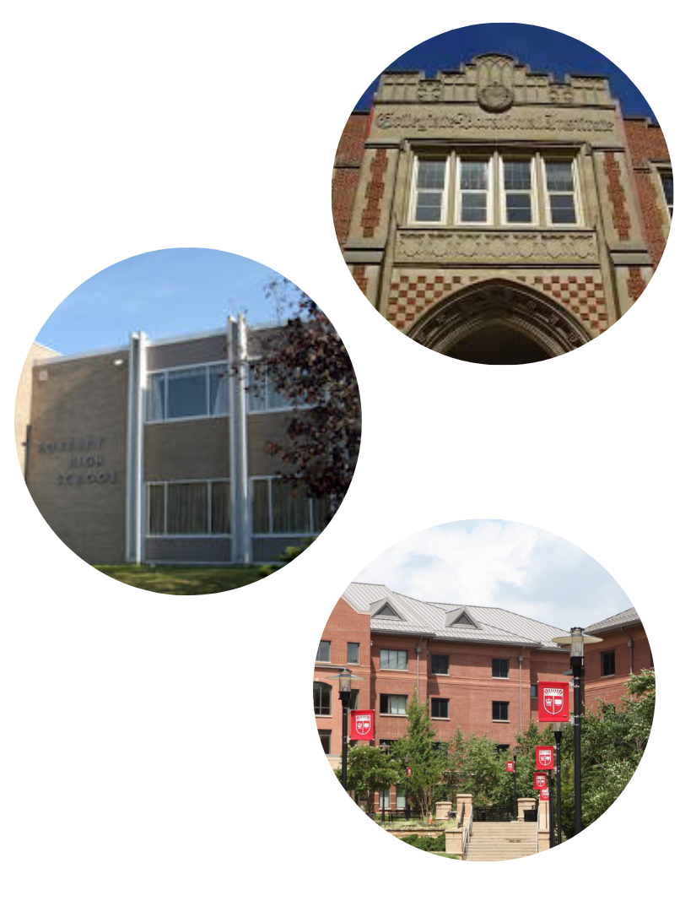

Education
The first high school I ever attended was the Guelph Collegiate Vocational Institute, where I first honed my academic skills. I enrolled into the rigorous International Baccalaureate Program. I spent two years at GCVI, making the most of my academic, social, and recreational life.
However, a promotion in my father's job made my family move from Guelph, Ontario to New Jersey. Having to give up the International Baccalaureate Program and leaving my family and friends was not easy. But my perspective changed upon enrolling in Roxbury High School. The whole community was so accepting and the Advanced Placement courses I took propelled me even further than the IB program did.
Now, as I prepare for Rutgers-New Brunswick as a Electrical and Computer Engineer, I hope that it has the same impact on me that my high schools did. Conversely, I want to leave a positive mark on the campus and in the hearts of every staff member, professor, and student.